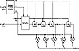
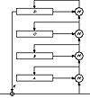
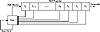

Click Here!


|
Click Here! |
|
| |
|
|
|
To access the contents, click the chapter and section titles.
Applied Cryptography, Second Edition: Protocols, Algorthms, and Source Code in C (cloth)
SEAL also uses four 32-bit registers, A, B, C, and D, whose initial values are determined by n and the k-derived tables R and T. These registers get modified over several iterations, each one involving 8 rounds. In each round 9 bits of a first register (either A, B, C, or D) are used to index into table T. The value retrieved from T is then added to or XORed with the contents of a second register: again one of A, B, C, or D. The first register is then circularly shifted by nine positions. In some rounds the second register is further modified by adding or XORing it with the (now shifted) first register. After 8 rounds of this, A, B, C, and D are added to the keystream, each masked first by adding or XORing it with a certain word from S. The iteration is completed by adding to A and C additional values dependent on n, n1, n2, n3, n4; exactly which one depends on the parity of the iteration number. The important ideas in this design seem to be:

SEAL requires about five elementary machine operations to encrypt each byte of text. It runs at 58 megabits per second on a 50 megahertz 486 machine. This is probably the fastest software algorithm in the book. On the other hand, SEAL must preprocess its key into internal tables. These tables total roughly 3 kilobytes in size, and their calculation takes about 200 SHA computations. Thus, SEAL is not appropriate to use in situations where you don’t have the time to perform the key setup or you don’t have the memory to store the tables. Security of SEAL SEAL is a new algorithm and has yet to be subjected to any published cryptanalysis. This suggests caution. However, SEAL seems to be well thought through. Its peculiarities do, in the end, make a good deal of sense. And Don Coppersmith is generally regarded as the world’s cleverest cryptanalyst. Patents and Licenses SEAL is being patented [380]. Anyone wishing to license SEAL should contact the Director of Licenses, IBM Corporation, 500 Columbus Ave., Thurnwood, NY, 10594. 17.3 WAKEWAKE is the Word Auto Key Encryption algorithm, invented by David Wheeler [1589]. It produces a stream of 32-bit words which can be XORed with a plaintext stream to produce ciphertext, or XORed with a ciphertext stream to produce plaintext. And it’s fast. WAKE works in CFB; the previous ciphertext word is used to generate the next key word. It also uses an S-box of 256 32-bit values. This S-box has a special property: The high-order byte of all the entries is a permutation of all possible bytes, and the low-order 3 bytes are random. First, generate the S-box entries, Si, from the key. Then initialize four registers with the key (or with another key): a0, b0, c0, and d0. To generate a 32-bit keystream word, Ki:
The ciphertext word Ci, is the plaintext word, Pi XORed with Ki. Then, update the four registers:
Function M is
This is shown in Figure 17.2. The operation >> is a right shift, not a rotation. The low-order 8 bits of x + y are the input into the S-box. Wheeler gives a procedure for generating the S-box, but it isn’t really complete. Any algorithm to generate random bytes and a random permutation will work. 
WAKE’s biggest asset is that it is fast. However, it’s insecure against a chosen-plaintext or chosen-ciphertext attack. It is being used in the current version of Dr. Solomon’s Anti-Virus program. 17.4 Feedback with Carry Shift RegistersA feedback with carry shift register, or FCSR, is similar to a LFSR. Both have a shift register and a feedback function; the difference is that a FCSR also has a carry register (see Figure 17.3). Instead of XORing all the bits in the tap sequence, add the bits together and add in the contents of the carry register. The result mod 2 becomes the new bit. The result divided by 2 becomes the new content of the carry register. Figure 17.4 is an example of a 3-bit FCSR tapped at the first and second bit. Its initial value is 001, and the initial contents of the carry register is 0. The output bit is the right-most bit of the shift register.

Note that the final internal state (including the contents of the carry register) is the same as the second internal state. The sequence cycles at this point, and has a period of 10.
|
|
Products | Contact Us | About Us | Privacy | Ad Info | Home
Use of this site is subject to certain Terms & Conditions, Copyright © 1996-1999 EarthWeb Inc. All rights reserved. Reproduction whole or in part in any form or medium without express written permision of EarthWeb is prohibited.
|
){kind=link}
){kind=link}
){kind=link}
){kind=link}
){kind=link}
){kind=link}